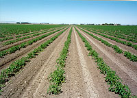
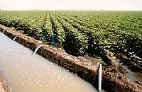
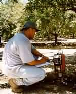
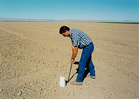
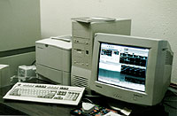
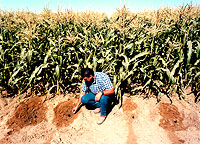

|
|
Dellavalle
can...
Improve -
Reduce
- Maximize -
Solve
- Provide -
Save -
Evaluate
- Assist
IMPROVE
YIELDS
- Overcome
production limitations caused by nutrient deficiencies, soil salinity,
mineral toxicity or water use.
- Experienced
consultants recommend optimum fertilizer, amendment and water
management.
<
Back to top >
REDUCE
COSTS
- Analyzing
your soil, tissue and water establishes the current nutrient needs
for your crop.
- Knowing
your crop's needs will eliminate unnecessary fertilizer purchases.
- Monitoring
your crop's water use may reduce your use of water and power.
<
Back to top >
MAXIMIZE
WATER EFFICIENCY
- Monitoring
soil moisture, with a neutron probe, provides a basis for an irrigation
plan for when and how much to irrigate.
<
Back to top >
PROVIDE
HIGH-QUALITY INFORMATION FOR MAKING DECISIONS
- Our
accurate laboratory results are assured by internal quality controls
and confirmed through external proficiency testing programs.
- Our
knowledgeable, certified consultants can interpret results and
make recommendations.
- Our
analytical methods and staff recommendations are based on research
by University of California and other agencies in arid and semi-arid
growing conditions.
<
Back to top >
SOLVE
PROBLEMS
- Soil
and plant tissue analyses can provide information for correcting
nutrient deficiencies or excesses, or confirming that everything
is satisfactory.
- Our
consultants can often determine the probable cause with field
inspection.
- We
can analyze your irrigation water to assure nutrient and salinity
levels are suitable.
<
Back to top >
PROVIDE
EXPERIENCED CONSULTANTS
- Our
certified professional agronomists and soil/plant scientists are
college educated with years of field experience.
- Their
broad knowledge of crops, soil variations, nutrient deficiencies,
pesticide and pathogen problems is your resource.
- To
address your needs, our consultants will provide recommendations,
suggestions and solutions.
<
Back to top >
SAVE
YOU TIME (Time is money!)
- Information
is provided expeditiously so you can respond quickly.
- Samples
can be picked up from most California locations.
- Our
sample collection program can relieve work and worry.
- We
have an extensive network of laboratories for your unusual analytical
requests.
- Sample
receiving hours are 6:30 a.m. to 5:00 p.m. with extended summer
hours.
<
Back to top >
EVALUATE
LAND PRIOR TO ACQUISITION
- With
analysis of property's soil and water, we can determine if it
meets your objectives.
- Appropriate
rootstock/crops and fertilizer programs can be recommended, based
on soil conditions.
- Appropriate
reclamation steps can be provided for various situations (alkalinity,
hardpan or even excavation).
<
Back to top >
ASSIST
WITH LITIGATION AND REGULATIONS
- Expert
witness investigation and testimony can be provided.
- We
can work as your liaison with the local, state and federal agencies
such as Food & Agriculture, Health Services and Water Resources.
- We
can supply the laboratory analysis that real estate disclosure
rules require.
- We
can provide import permits for
samples to legally enter the U.S.
<
Back to top >
IN
OUR 20 YEARS
WE HAVE WORKED WITH
THOUSANDS OF CLIENTS...
WE CAN HELP YOU TOO!
800
228-9896
559
233-6129
fax: 559 268-8174
Hours: Mon-Fri 7 am - 5 pm, PST
|